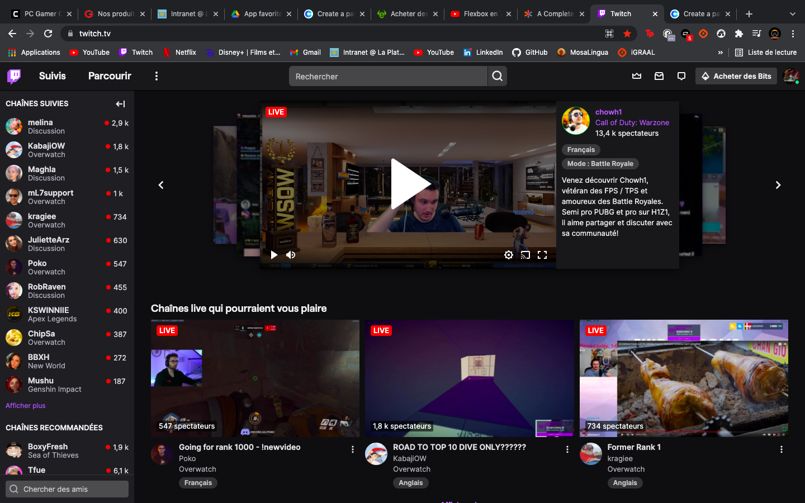

Ci dessus comment ce présente le site officiel de twitch..
TWITCH est une plateforme de diffusion vidéo en direct conçue à l'origine pour la diffusion de jeux vidéo. Elle permet de regarder gratuitement des "gamers". Les utilisateurs peuvent suivre leurs streamers préferer mais aussi s'abonner a leurs chaînes pour les soutenirs.
Il y a aujourd'hui plus de 100 millions d'utilisateurs,essentiellement des hommes de 18 à 35 ans. Environ 1,5 million de diffuseurs utilisent Twitch parmi lesquels on trouve des musiciens, des comiques et des politiciens.
Beaucoup gamers rêve d'être au devant de la scène twitch et pouvoir en faire un métier et devenir STREAMER.